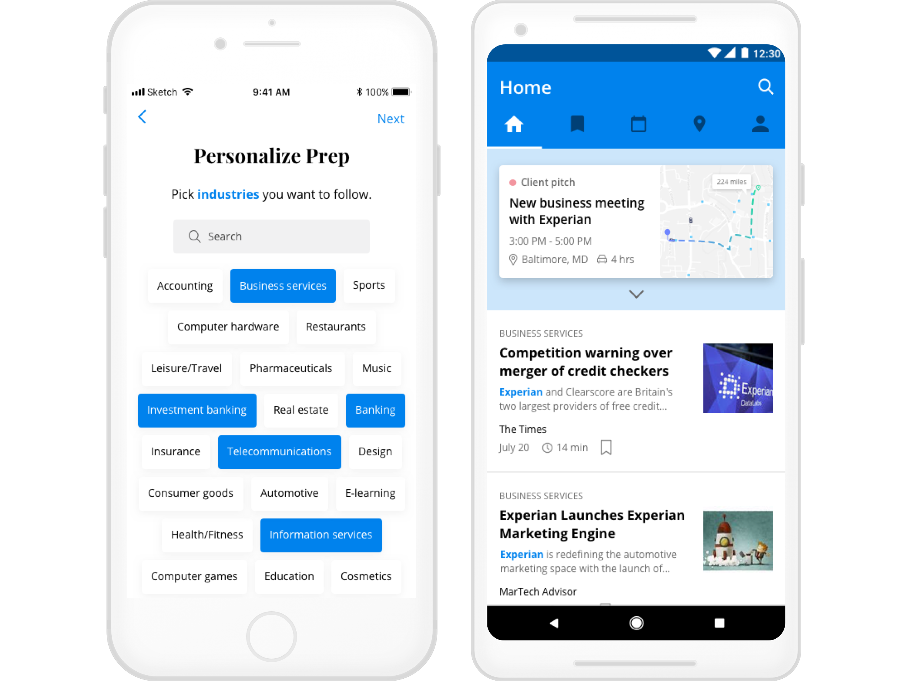

Prep
iOS & Android App
User Experience, Branding, Visual Design
1 week // 2018
I did a design exercise in order to challenge myself to design a mobile app for both iOS and Android.
Since I hadn’t used an Android in like a decade, I had to do a little bit of research to refresh my memory and learn the differences between iOS and Android.
I gave myself one week to create this “Business Passenger App” with not a lot of constraints, so I really had to narrow scope in order to work within the timeline given.
It was challenging, yet fun, and I hope to do more quick design exercises in the future!

Project Overview
Assume you live in a world where cars drive themselves. Design a door-to-door mobile app experience that allows for business executives (aged 28-45) to make the most out of their 4-hour journey from NYC to Baltimore to meet with a new client.
Problem
Business executives often find themselves referencing several apps to prepare for new client meetings, which can be inefficient and frustrating.
Solution
The goal is to design a one-stop mobile app that helps business executives successfully and efficiently supplement their client research and preparation.
1. Empathize
First, I needed to learn more about the users. In order to do this in the allotted time, I decided to conduct one-on-one interviews with people in sales to get more in-depth insights. After that, I did some competitive research to learn from other apps’ successes and failures.
Interviews
I conducted three one-on-one interviews (one in-person, one over the phone, and one via email) and gathered learnings in these areas: research topics, places to find information, frustrations, and value adds.
AFFINITY MAPPING
In order to make sense of the information I had gathered from one-on-one interviews, I decided to create an affinity diagram and organize all of the data into groups based on relationships: prep/research, tools, and goals/outcomes.
COMPETITIVE ANALYSIS
To supplement my user research, I did competitive research to see and critique what other apps are doing and draw inspirations from them.
How can I display what’s most important to the users? With the amount of information the users would expect to see, how do I balance simplicity and complexity? Below are screenshots of some of the apps I referenced.
2. Define
After one-on-one interviews and competitive analysis, I had a better understanding of the potential users of the “Business Passenger App” and was ready to map out personas, user stories, and user flows.
USER PERSONAS
The potential users of the app could be grouped into these three types: Efficiency, Versatility, and Knowledge.
Efficiency
Nick P.
"I’m ready to find an app that makes client meeting preparation a whole lot easier for me."
Versatility
Allison W.
"I want to find an app that syncs with my work calendar and shows me relevant company and industry news."
Knowledge
Joseph J.
"I like to bookmark important articles to refer back to when I’m creating presentations."
USER STORIES & FLOWS
Talking to potential users helped to prioritize the list of functionalities to build a minimum viable product (MVP). In terms of the flows, I decided to focus on onboarding, which is an essential process of curating relevant content for users.
3. Ideate
Now on to my favorite part: creating wireframes! It always helps to have as much research done as possible before this phase; otherwise, you would get lost. Thankfully, some of the research that I had done prior to this gave me a clearer picture of who I am designing this for and why.
SKETCHING & LOW-FIDELITY PROTOTYPING
As always, I began this process by sketching out wireframes with pen and paper then moved on to myBalsamiq to create lo-fi wireframes.
4. Brand Identity
Since this is meant to be a challenge to design something hypothetical in a short amount of time, I had to come up with the branding elements pretty quickly and skip a lot of testing and validating with people.
TYPEFACE
I picked Playfair Display as the typeface for headlines, as well as the logo. I loved the professional yet approachable look. I appreciated that each letter had a lot of cool character. As for the body copy, I chose Open Sans, a font that is simple and easy on the eyes - very important to users when they are reading articles for research.
COLOR PALETTE
I wanted the app to have a minimalistic look, so that the colors are not distracting users from the content they came to see. Blue is the main color and would be used for buttons, as well as to highlight the searched terms. The other colors would be used more sparingly across the application.
LOGO
I ultimately went with the name “Prep” for the app - keeping in mind that business executives would use this app to do research, or “prep,” for new client meetings. I kept the logo black to exude professionalism and trust.
5. Prototype & Validate
After I created the design guide, I was ready to work on the hi-fi mocks. Every time I ran into usability questions (there were so many!), I made sure to ask my friends for thoughts and feedback, rather than making assumptions. Due to time constraints, so I did not get to validate my design as much as I wanted to.
SINGLE SIGN-ON (SSO)
In my initial mockups, I included Google, Facebook, and email for SSO. However, after testing with a few people, it only made sense to also include Microsoft. I may not have a Microsoft account, but plenty of others do! It’s important to remember to design for others, not just yourself.
ONBOARDING
In order to start the process of curating articles for users, Prep will ask to select industries and companies they would like to follow as part of the onboarding process.
One of the feedback I got from people was that it was difficult to tell the two steps apart initially.
To solve this usability issue, I decided to highlight and bold the terms “industries” and “companies”, so that the onboarding process is as seamless and pleasant as possible.
DASHBOARD
Dashboard was the toughest screen to mock up due to the amount of information I had to show in a limited screen real estate. From talking to potential users, I knew that it had to contain the following items:
IOS VS ANDROID
The main goal for this exercise was to gain experience designing for both iOS and Android frameworks. There are a few notable differences between the two platforms, as noted below.
Final Deliverable
In total, I designed 28 screens in Sketch and created two clickable prototypes - one for iOS and one for Android - using InVision.


Takeaways
This was a great exercise for me to get a hands-on experience designing for both iOS and Android. I feel like I became a more well-rounded designer after this! I wish I had done more research and testing, but I appreciated having a tight deadline and learning to cut scope. In the real working world, I could have tight deadlines to deliver wireframes/prototypes/etc., so in a way, this was a sneak peek of what’s to come! I did not get to finish working on the company details page, so I would like to flesh that out in the future.